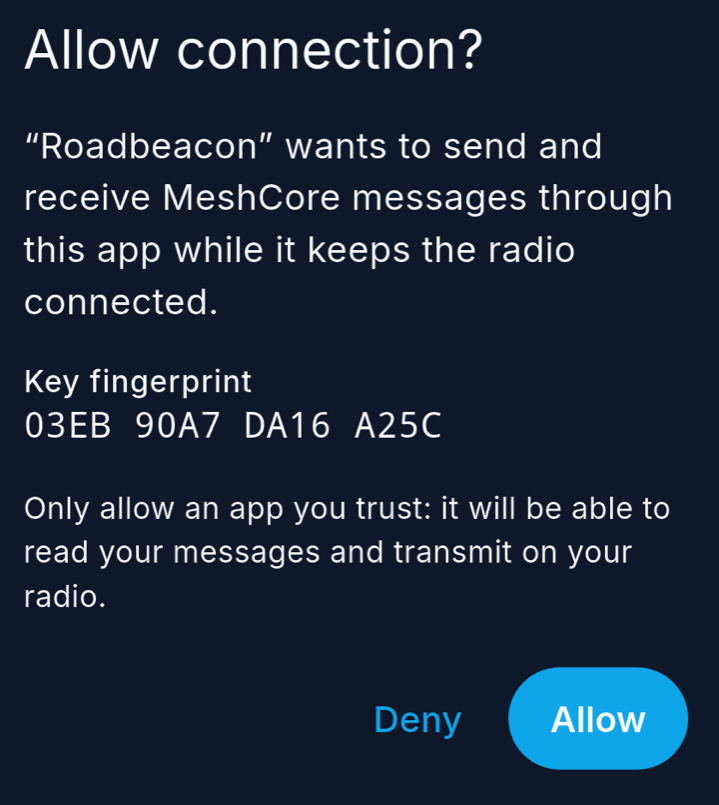
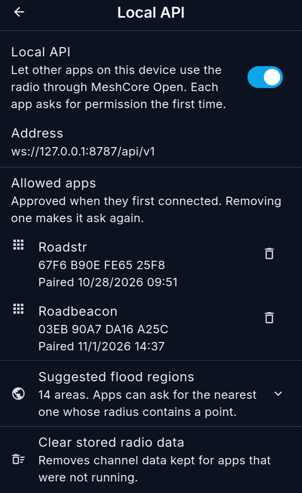
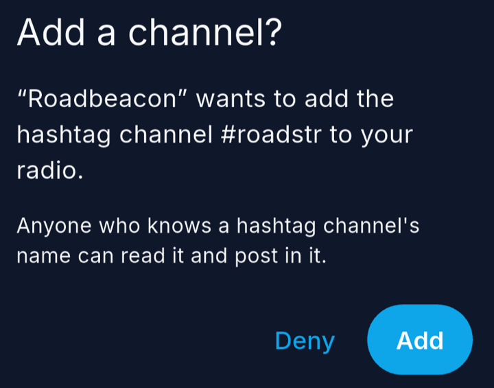
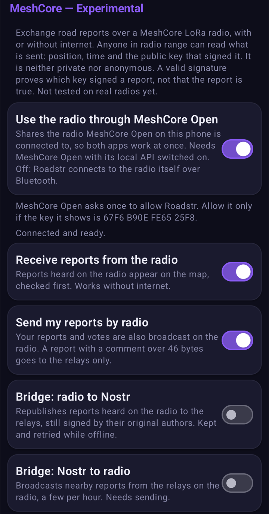
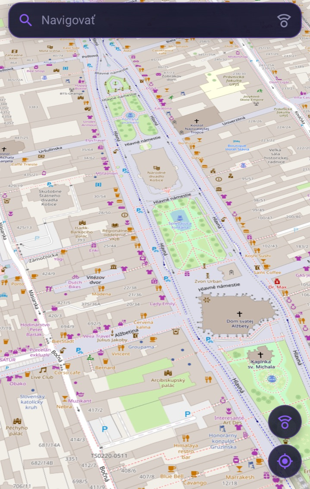

One node, one app
A MeshCore companion node takes one Bluetooth connection at a time. If you have one node, only one app on your phone can talk to it. Usually that app is a chat client such as MeshCore Open. A road-event app that wants the node has to take the connection away, and then chat stops working. So you have to choose between chatting with your node and sending and receiving road reports.
The fix, borrowed from Reticulum
Reticulum solved this a long time ago. One daemon, rnsd, holds the radio interfaces, and every program on the machine reaches the network through it. That's why a single device can run messengers, file transfer, sensors and bridges side by side on one radio.
MeshCore can work the same way. MeshCore Open keeps its one connection to the node and acts as the daemon. A small local API lets other apps on the same phone subscribe to the traffic they care about and send through that connection:
Roadstr or ──┐
Roadbeacon │ ws://127.0.0.1:8787 ┌───────────────┐ BLE ┌───────┐ LoRa
next app ────┼───────────────────────►│ MeshCore Open │◄───────►│ radio │◄────────► mesh
another app ─┘ (local API) │ (chat UI) │ └───────┘
└───────────────┘
Nothing in the API is specific to road events. An app picks a channel and a data type and gets its own traffic, so a sensor logger, a bot, or an app that opens a door over the mesh can share the node with chat in the same way.
The radio protocol and the firmware stay as they are. Nothing leaves the phone except what goes out over LoRa.
Roadstr or Roadbeacon: pick one
You need one of the two road apps, not both. They speak the same format and pass the same test vectors, so a report made in one shows up in the other, over the radio and over Nostr relays.
The difference is the map. Roadbeacon is a plugin for OsmAnd: if you already navigate with OsmAnd, reports appear there. Roadstr is its own maps and navigation app, by a different author.
Design choices
The local API is off until you switch it on, and it only listens on 127.0.0.1. It refuses browsers, so a web page can't reach your radio through it.
Each app needs your permission once. The app holds a key and proves it on every connection. The first time, MeshCore Open asks "Allow Roadstr to connect?" and shows the key's fingerprint, which you can compare with the one the app shows. You don't copy any token, and you can revoke an app in MeshCore Open's settings.


When MeshCore Open loses the radio, it tells the connected apps. They show that the radio is gone, wait, and carry on by themselves when it's back.
Road events travel on the hashtag channel #roadstr. A hashtag channel's key comes from its name, so an app can ask MeshCore Open to add the channel without sending any secret; you confirm it in a dialog. Anyone can read the channel, and that's intended. Every report carries its author's signature, so anyone can check it, and nobody can post a report in someone else's name.

Reports go out as MeshCore channel data, not as chat text, so chat clients that don't know the format never display them. MeshCore keeps a registry of data types, and Road Events has asked for 0x0150 (MeshCore#3750). Until it's granted, the apps send the development value 0xFF52 and listen on both.
A report is 117 to 163 bytes and a vote is 134, so each fits in one LoRa packet and nothing gets split up. Sends wait for a quiet radio like chat messages do, and the bridges between radio and relays have hourly limits.
The API is a proposal to MeshCore Open (#616). The reference is LOCAL_API.md, and the radio side of road events is described in docs/meshcore.md.
How to test it
You need an Android phone and a MeshCore companion node with firmware 1.15 or newer. Two phones with two nodes are much better, because the main thing to test is a report going from one radio to the other.
Before you install: the MeshCore Open test build replaces the official app and can't be installed over it. Uninstalling the official app deletes its contacts, channels and chat history, so write down your channels first. The Roadstr test build installs next to the regular Roadstr. Roadbeacon is a normal release, 0.5.1 or newer, from Zapstore or GitHub.
- Install the MeshCore Open test build and connect it to your node. The local API is already on in this build.
- Install one road app and set it up.
- Roadstr: in Settings → MeshCore, turn on Use the radio through MeshCore Open, then Receive and Send. Tap Allow in MeshCore Open and confirm there.
- Roadbeacon: in Settings → MeshCore, turn on Use MeshCore radio and allow it in MeshCore Open. Then turn on sending, and showing reports heard on the radio.
#roadstrchannel, MeshCore Open asks whether to add it. - Turn internet off and report something on one phone, with a short comment. It should appear on the other phone, heard from the radio. Try it in both directions, and if you can, with Roadstr on one phone and Roadbeacon on the other. Try a vote too, and check that chat still works.
- Turn the node off and on again. The road app should notice and recover by itself.


The full checklist, and what has already been tested, are in the release notes. A report going from one radio to another hasn't been confirmed yet. If you try it, tell us how it went: open an issue for Roadbeacon, MeshCore Open's local API or Roadstr, or write on Nostr.